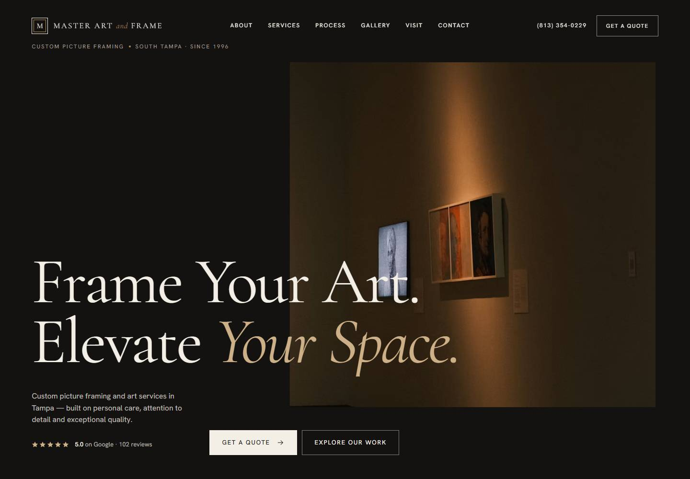

01
VOS Advocacia
Escritório de advocacia · Itabuna, BA
- Next.js
- React
- Framer Motion
Disponível para projetos — 2026
Sou Paulo Henrique, desenvolvedor de software. Crio sites institucionais e sistemas web — de landing pages a PDVs em nuvem — para negócios que precisam de resultado real.
Ver trabalhos(01) — Manifesto
Um clube, um escritório de advocacia, uma construtora, uma salgaderia. Negócios diferentes, a mesma pergunta: o que essa pessoa precisa encontrar primeiro? Cada site e cada sistema que construo começa pela resposta.
(02) — Sites recentes
05
Escritório de advocacia · Itabuna, BA

Construtora e incorporadora · Ipiaú, BA

Clube de lazer e esporte · Ipiaú, BA

Casa de câmbio · Cotações e WhatsApp

Saúde & emagrecimento · Redesign 2026
(03) — Sistemas
Por trás do balcão: login, caixa, estoque e financeiro funcionando todos os dias.

Controle financeiro e vendas para salgaderia: PDV rápido, estoque por produto e dashboard com filtro por período. Instala como aplicativo (PWA) no notebook do balcão.

Ponto de venda em nuvem, multi-tenant, para supermercados: leitura de código de barras, estoque em tempo real, financeiro, RH e auditoria com isolamento por loja.
(04) — Estados Unidos
Primeiro projeto no ar
Sites e sistemas para empresas nos Estados Unidos, em inglês e espanhol, com atendimento 100% remoto. O primeiro já está no ar em Tampa, na Flórida.

Molduras sob medida · Tampa, FL
Agendamento, pedidos, estoque e painéis feitos sob medida para a operação.
Páginas de campanha focadas em conversão, em inglês e espanhol.
(05) — Estudos
Projetos menores onde pratico fundamentos: JavaScript puro, acessibilidade e interface.
(06) — Sobre
Transformo necessidades de negócios locais em produtos digitais — equilibrando estética, clareza e engenharia.
(07) — Processo
Conversar com o negócio: quem é o cliente, o que ele procura e o que precisa acontecer.
Seções, fluxos e hierarquia. No sistema, os dados e as permissões de cada usuário.
Tipografia, cor e identidade visual coerentes com a marca — em qualquer tela.
Código performático, acessível e responsivo, com segurança onde há dados.
Deploy, domínio e ajustes finos com o site ou sistema já em uso.
(08) — Contato